鮫竜（もっと鮫らしく：ホホジロザメの頭・えら・背びれ、翼は胸びれ）

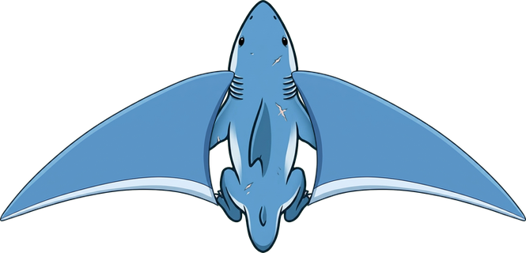

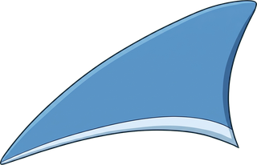
宝石にする前の、最初のデザインだけ。胴と翼を並べた絵は目安の組み合わせ（ゲームでの翼の付け根は、決まってから測って合わせます）。ゲームにはまだ入れていません。
借りている別の竜種の絵（DRAGON_PARTS_ALIAS ＋ spriteTint）の代わりの、専用の胴と翼。宝石にする前に見ていただくための見本で、ゲームにはまだ入れていません。
組み方はゲームと同じ（胴の高さ・翼の幅・肩に翼の付け根・翼を胴の上・尻尾はゲームが描く1本。塊竜・鬼火はゲームが尻尾を描かない竜種なので尻尾は絵の中）。
絵は tools/gen_dragon_design.py <竜種> <body|wing>、並べた絵は tools/compose_design_preview.py。
センザンコウ・ダンゴムシのように丸まる竜：背の大きな帯の鎧5枚・体に巻き付けた尻尾で、ほぼ円い形（玉の表面に小さく付いても読める大きな面。尻尾はゲームが描かないので絵の中）。翼は帯の鎧を縁に並べた丸く短い翼
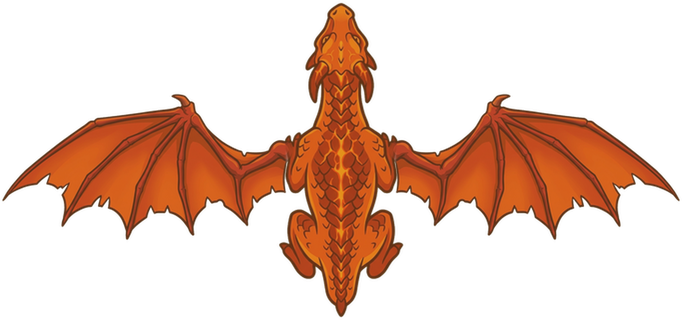
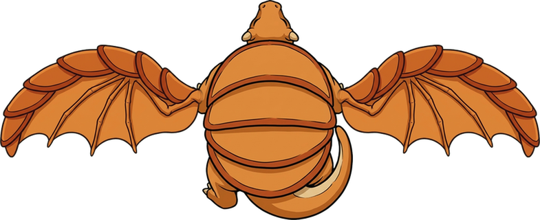
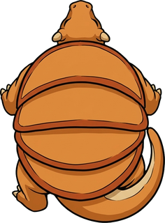
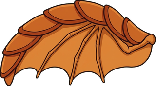
ball: {
body: "assets/dragon_ball_body.png",
wing: "assets/dragon_ball_wing.png",
bodyPivot: { cx: 120.7, cy: 180.1, w: 236, h: 320 },
shoulder: { left: { x: 18.5, y: 142 }, right: { x: 212.5, y: 142 } }, // 幅最大の行で実測
wingAnchor: { x: 319, y: 83.2 },
bodyDrawH: 27,
wingDrawW: 30,
},
ホシバナモグラの竜：桃色の星形の鼻・左右に張り出す大きなシャベルの前足と象牙の爪・背に土くれと小石・背骨に石の棘。翼は縁に岩と土がこびり付いた茶色の膜と手首の掘る爪
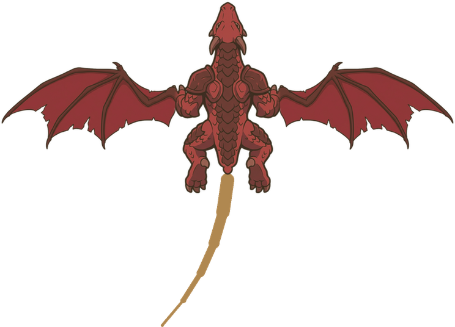
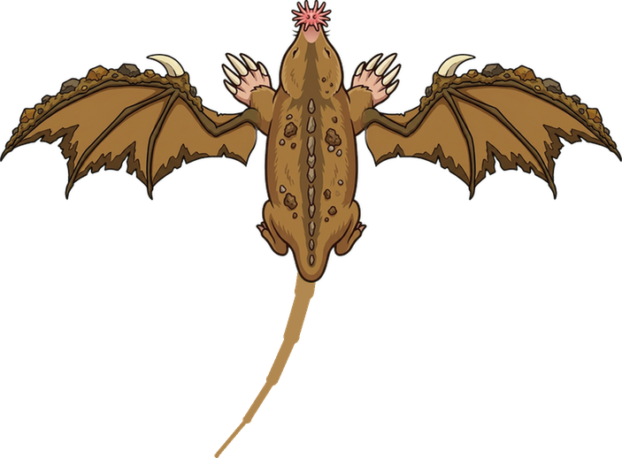
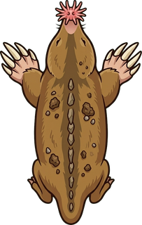
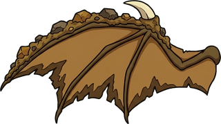
mole: {
body: "assets/dragon_mole_body.png",
wing: "assets/dragon_mole_wing.png",
bodyPivot: { cx: 101.0, cy: 158.3, w: 203, h: 320 },
shoulder: { left: { x: 45, y: 140 }, right: { x: 157, y: 140 } }, // 手で測った（自動の値は前脚の所に付く）
wingAnchor: { x: 319, y: 85.8 },
bodyDrawH: 27,
wingDrawW: 30,
},
U字磁石の竜：2本の角が頭の後ろで馬蹄形の磁石になり、角の先が赤（N）と銀（S）・背に棒磁石を重ねた板・肩に磁力線に沿って立つ砂鉄。翼の骨は磁力線の弧で、先が赤と銀
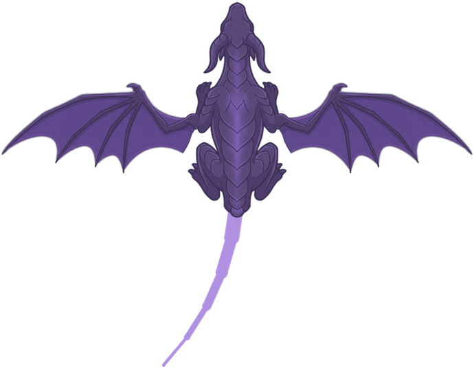
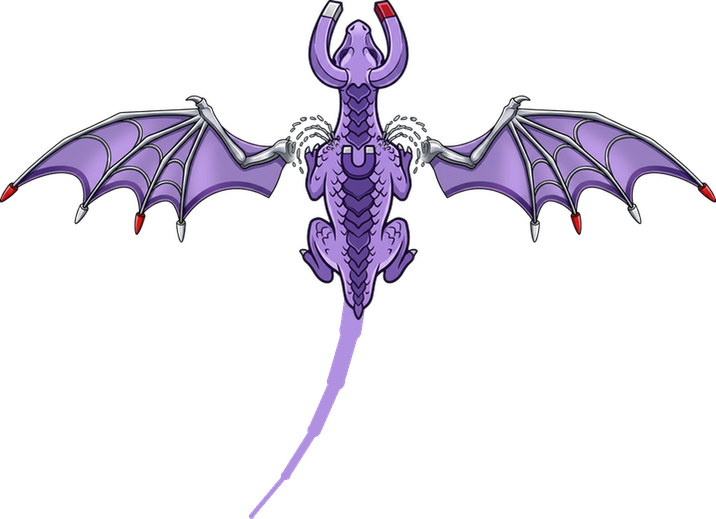
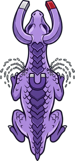
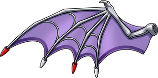
magnet: {
body: "assets/dragon_magnet_body.png",
wing: "assets/dragon_magnet_wing.png",
bodyPivot: { cx: 74.5, cy: 159.0, w: 150, h: 320 },
shoulder: { left: { x: 11.9, y: 151 }, right: { x: 137.1, y: 151 } }, // 幅最大の行で実測
wingAnchor: { x: 319, y: 60.2 },
bodyDrawH: 27,
wingDrawW: 30,
},
胴は1つ・首と頭が2つの竜：V字に分かれた2つの頭の角の間を小さな雷のアーチが飛ぶ（2列の間を焼く遊びに合わせて）・背の左右で白と琥珀の筋。翼の骨は2本ずつ並び、前の縁を稲妻が走る
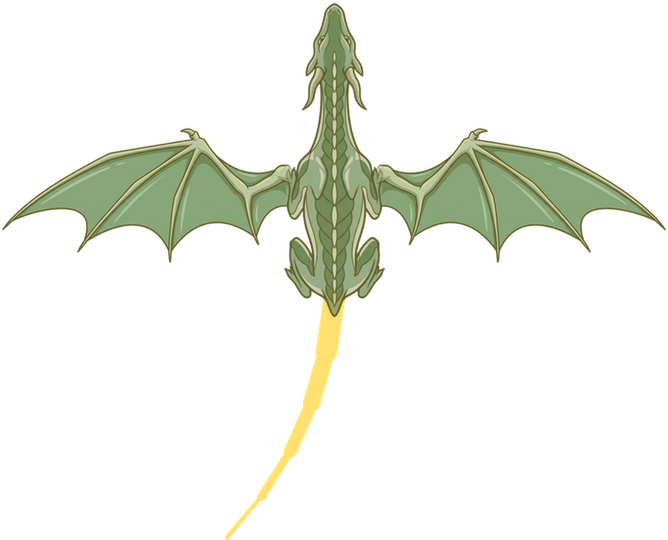
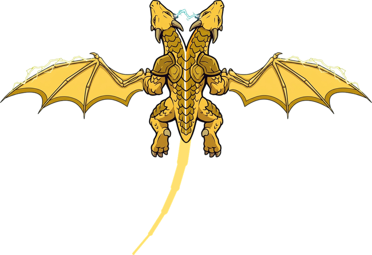
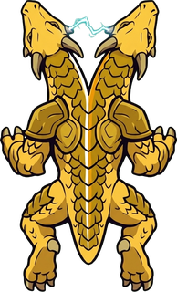
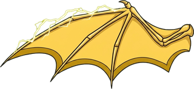
twin: {
body: "assets/dragon_twin_body.png",
wing: "assets/dragon_twin_wing.png",
bodyPivot: { cx: 96.8, cy: 157.7, w: 194, h: 320 },
shoulder: { left: { x: 15.4, y: 161 }, right: { x: 177.6, y: 161 } }, // 幅最大の行で実測
wingAnchor: { x: 319, y: 59.0 },
bodyDrawH: 27,
wingDrawW: 30,
},
青白い炎でできた霊の竜（図鑑用。ゲームでは灯で描く）：背と後頭部から炎のたてがみ・うつろに光る白い目・炎に溶けて消える尻尾（noTail なので絵の中）。翼は後ろへたなびく青い炎の舌
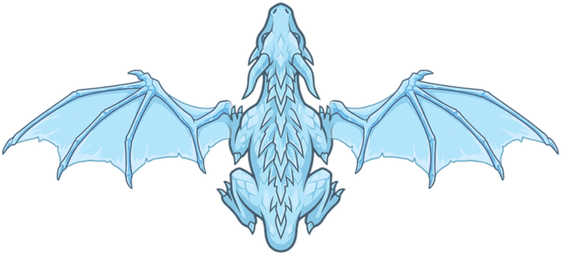
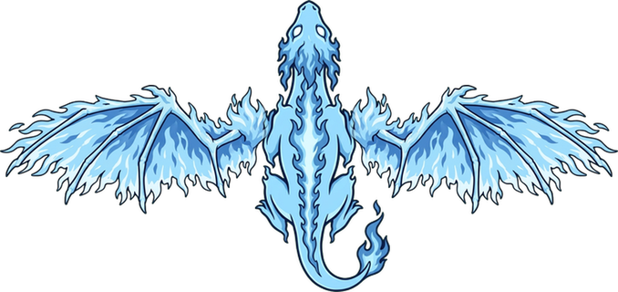
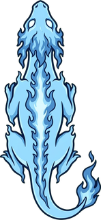
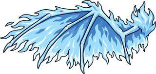
wisp: {
body: "assets/dragon_wisp_body.png",
wing: "assets/dragon_wisp_wing.png",
bodyPivot: { cx: 64.9, cy: 170.0, w: 148, h: 320 },
shoulder: { left: { x: 15.3, y: 136 }, right: { x: 102.7, y: 136 } }, // 幅最大の行で実測
wingAnchor: { x: 319, y: 46.2 },
bodyDrawH: 27,
wingDrawW: 30,
},
騎士の鎧の竜：鋲を打った鉄板・棘付きの丸い肩当て・左肩から右の腰へ斜めに掛けた太い鎖・兜のような頭。翼の骨は鎖、膜は鋲打ちの鉄板、手首に小さな棘鉄球
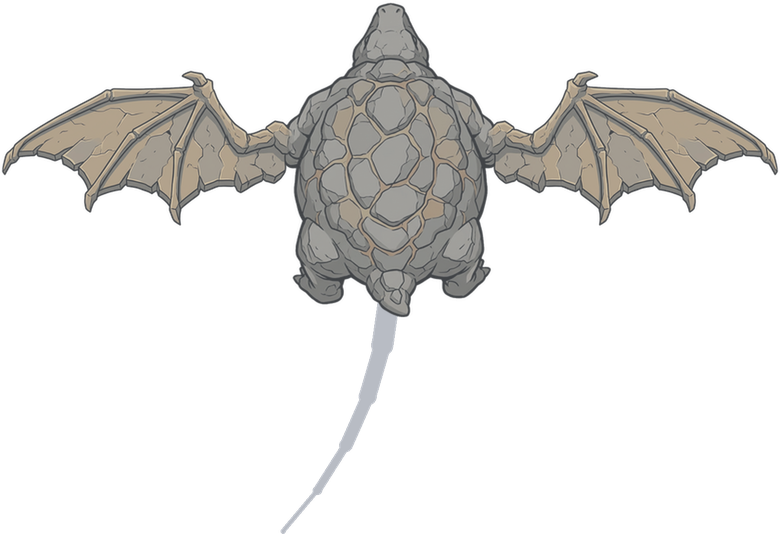
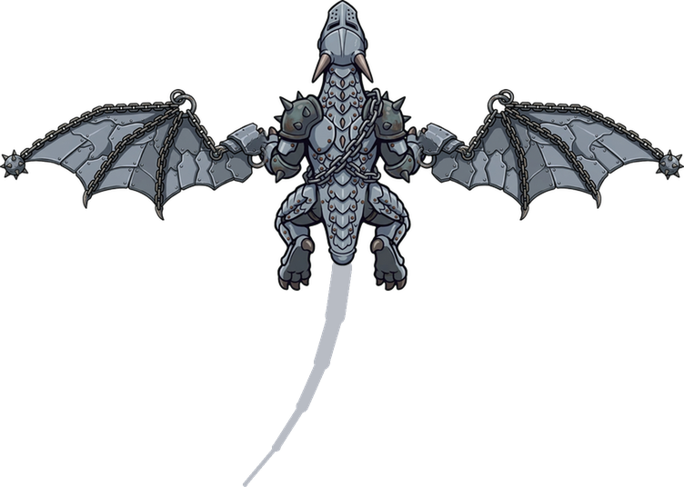
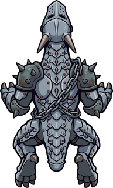
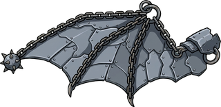
flail: {
body: "assets/dragon_flail_body.png",
wing: "assets/dragon_flail_wing.png",
bodyPivot: { cx: 96.2, cy: 176.2, w: 193, h: 320 },
shoulder: { left: { x: 15.4, y: 162 }, right: { x: 176.6, y: 162 } }, // 幅最大の行で実測
wingAnchor: { x: 319, y: 69.1 },
bodyDrawH: 27,
wingDrawW: 30,
},
鯨の竜：幅の広い丸い頭・頭の上の潮吹き穴・フジツボ・背骨に沿った小さなこぶの列・脇に白い腹。翼はザトウクジラの長い胸びれ（前の縁がでこぼこ・白い斑とフジツボ）
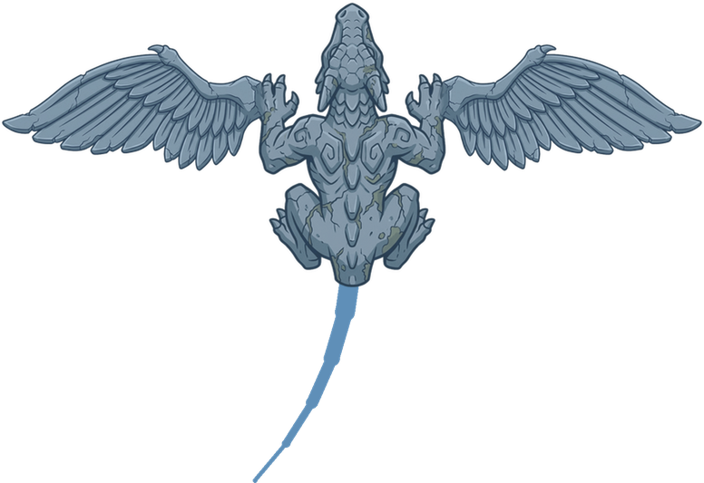
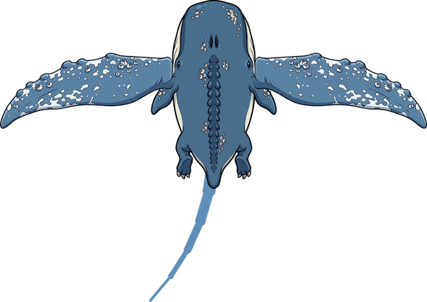
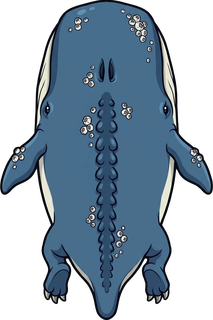
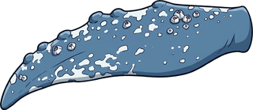
whale: {
body: "assets/dragon_whale_body.png",
wing: "assets/dragon_whale_wing.png",
bodyPivot: { cx: 106.1, cy: 152.0, w: 213, h: 320 },
shoulder: { left: { x: 40, y: 125 }, right: { x: 172, y: 125 } }, // 手で測った（自動の値は前脚の所に付く）
wingAnchor: { x: 319, y: 38.5 },
bodyDrawH: 27,
wingDrawW: 30,
},
砲兵の竜：背の真ん中に上向きの真鍮の臼砲（上から見て黒い砲口の輪）・まわりに鋲打ちの青銅の鎧・背に黒い砲弾の弾帯・兜のような頭。翼は真鍮の棒の骨と鋲打ちの青銅板、手首に歯車
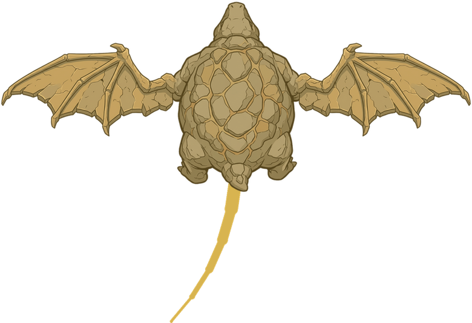
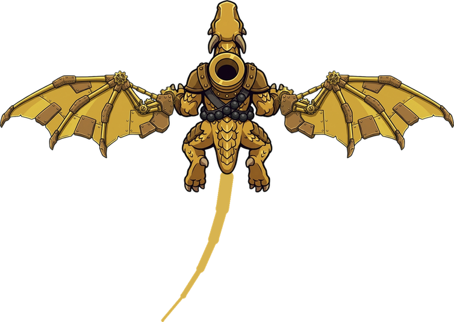
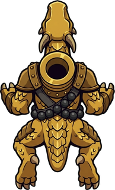
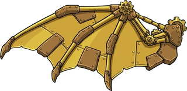
cannon: {
body: "assets/dragon_cannon_body.png",
wing: "assets/dragon_cannon_wing.png",
bodyPivot: { cx: 96.4, cy: 175.4, w: 194, h: 320 },
shoulder: { left: { x: 15.4, y: 162 }, right: { x: 177.6, y: 162 } }, // 幅最大の行で実測
wingAnchor: { x: 319, y: 48.2 },
bodyDrawH: 27,
wingDrawW: 30,
},
光線を撃つ細身の竜：鼻先に光る水色の水晶のレンズ・後ろへまっすぐ伸びる水晶の角・体を走る回路のような水色の光の筋・紺の装甲・背にプリズムの棘。翼は角ばった紺の膜に光の筋と前の縁の水晶の列
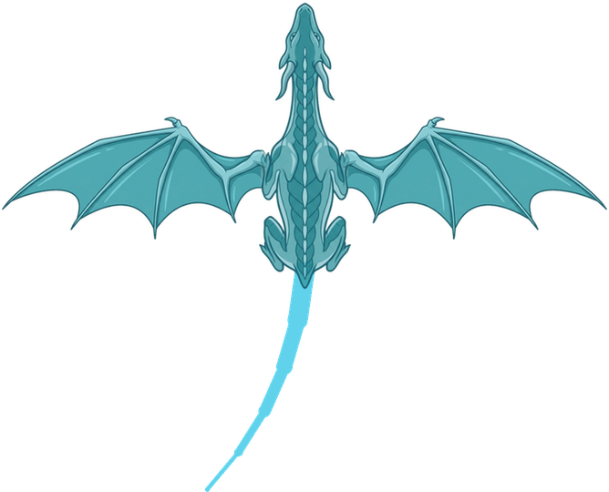
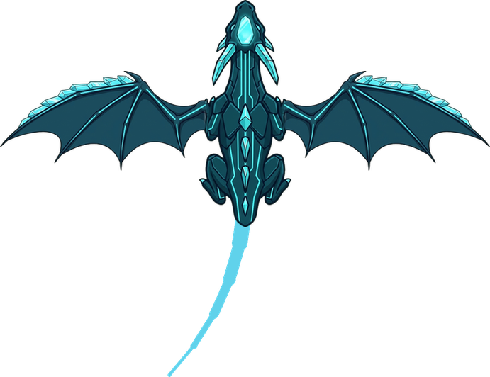
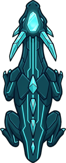
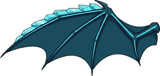
ray: {
body: "assets/dragon_ray_body.png",
wing: "assets/dragon_ray_wing.png",
bodyPivot: { cx: 64.5, cy: 171.5, w: 130, h: 320 },
shoulder: { left: { x: 14.5, y: 159 }, right: { x: 114.5, y: 159 } }, // 幅最大の行で実測
wingAnchor: { x: 319, y: 63.7 },
bodyDrawH: 27,
wingDrawW: 30,
},



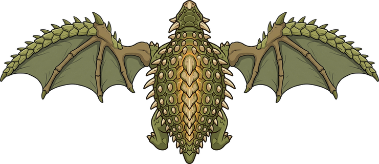


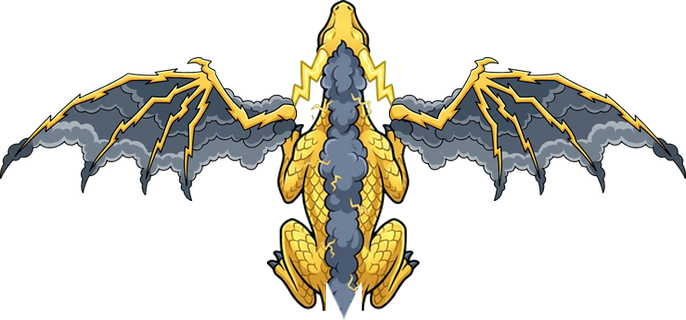